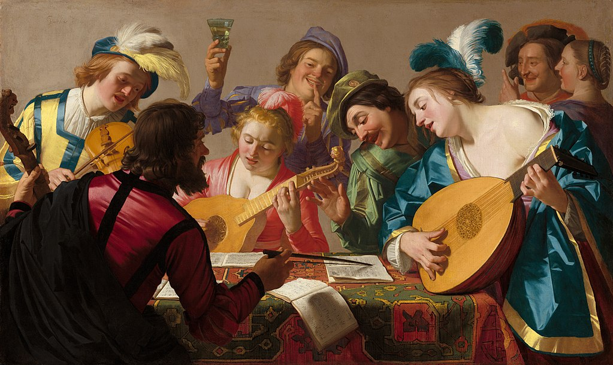
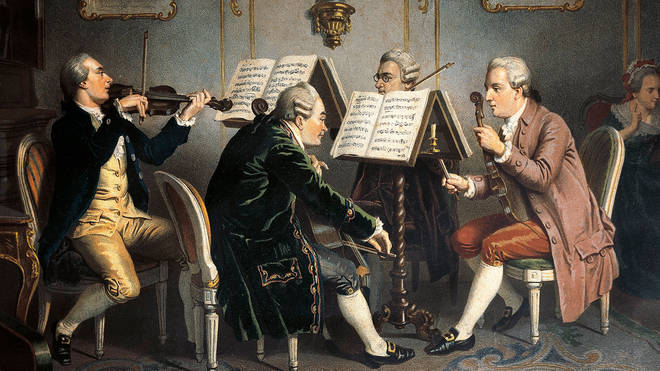
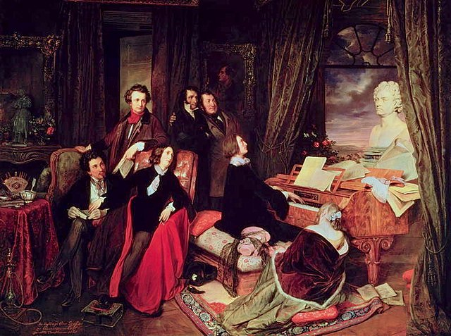
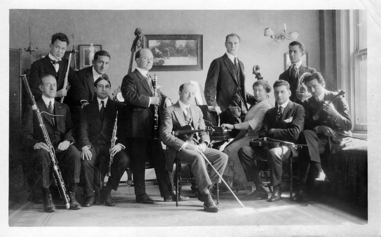
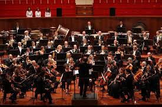

Renaissance
Renaissance music is traditionally understood to cover European music of the 15th and 16th centuries, later than the Renaissance era as it is understood in other disciplines. Rather than starting from the early 14th-century ars nova, the Trecento music was treated by musicology as a coda to Medieval music and the new era dated from the rise of triadic harmony and the spread of the contenance angloise style from Britain to the Burgundian School. A convenient watershed for its end is the adoption of basso continuo at the beginning of the Baroque period.
Baroque

Baroque music refers to the period or dominant style of Western classical music composed from about 1600 to 1750. The Baroque style followed the Renaissance period, and was followed in turn by the Classical period after a short transition, the galant style. The Baroque period is divided into three major phases: early, middle, and late. Overlapping in time, they are conventionally dated from 1580 to 1650, from 1630 to 1700, and from 1680 to 1750. Baroque music forms a major portion of the "classical music" canon, and is now widely studied, performed, and listened to. The term "baroque" comes from the Portuguese word barroco, meaning "misshapen pearl".[2] The works of George Frideric Handel and Johann Sebastian Bach are considered the pinnacle of the Baroque period.
Classical
The Classical period was an era of classical music between roughly 1750 and 1820. The Classical period falls between the Baroque and the Romantic periods. Classical music has a lighter, clearer texture than Baroque music, but a more sophisticated use of form. It is mainly homophonic, using a clear melody line over a subordinate chordal accompaniment,[2] but counterpoint was by no means forgotten, especially in liturgical vocal music and, later in the period, secular instrumental music. It also makes use of style galant which emphasized light elegance in place of the Baroque's dignified seriousness and impressive grandeur. Variety and contrast within a piece became more pronounced than before and the orchestra increased in size, range, and power.
Romantic
Romantic music is a stylistic movement in Western Classical music associated with the period of the 19th century commonly referred to as the Romantic era (or Romantic period). It is closely related to the broader concept of Romanticism—the intellectual, artistic and literary movement that became prominent in Western culture from approximately 1798 until 1837. Romantic composers sought to create music that was individualistic, emotional, dramatic and often programmatic; reflecting broader trends within the movements of Romantic literature, poetry, art, and philosophy. Romantic music was often ostensibly inspired by (or else sought to evoke) non-musical stimuli, such as nature, literature, poetry, super-natural elements or the fine arts. It included features such as increased chromaticism and moved away from traditional forms.
20th Century
20th-century classical music describes art music that was written nominally from 1901 to 2000, inclusive. Musical style diverged during the 20th century as it never had previously, so this century was without a dominant style. Modernism, impressionism, and post-romanticism can all be traced to the decades before the turn of the 20th century, but can be included because they evolved beyond the musical boundaries of the 19th-century styles that were part of the earlier common practice period. Neoclassicism and expressionism came mostly after 1900. Minimalism started much later in the century and can be seen as a change from the modern to postmodern era, although some date postmodernism from as early as about 1930. Aleatory, atonality, serialism, musique concrète, electronic music, and concept music were all developed during the century. Jazz and ethnic folk music became important influences on many composers during this century.
Modern
In music, modernism is an aesthetic stance underlying the period of change and development in musical language that occurred around the turn of the 20th century, a period of diverse reactions in challenging and reinterpreting older categories of music, innovations that led to new ways of organizing and approaching harmonic, melodic, sonic, and rhythmic aspects of music, and changes in aesthetic worldviews in close relation to the larger identifiable period of modernism in the arts of the time. The operative word most associated with it is "innovation". Its leading feature is a "linguistic plurality", which is to say that no one music genre ever assumed a dominant position.